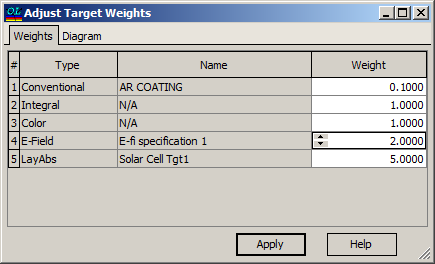
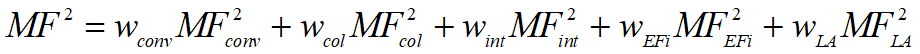
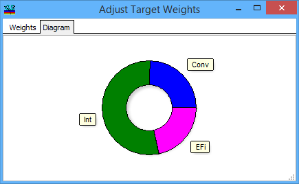

Target Weights
Target Weights
Navigation: OptiLayer Menu Commands > Data Menu >
Target Weights
` <thickness_stress_target.html>`__ ` <idh_menu_data.html>`__ ` <spectral_angular_specification.html>`__
The Adjust Target Weights dialog provides the functionality to alter the relative weight of each target that is currently loaded into memory. This feature enables you to adjust the importance or priority of individual targets in the optimization process by assigning different weights to each target.

It is a convenient and straightforward method to fine-tune the significance of various requirements in complex optimization problems. The resulting Merit Function value is computed using the following formula:

Here MFconv, MFcol, MFint, MFEFi , MFLA are Conventional Target, Color Target, Integral Target, Electric Field Target, and Layer Absorptance Target
wconv, wcol, wint, wEFi , wLA are corresponding weights.
By adjusting weights, you can effectively manage the relative importance of different target requirements in multi-criteria design problems. Alternatively, Target Weights can also be adjusted through the General Information Window.
Another useful feature of the Adjust Target Weights dialog is that it displays the relative contribution of different target types, providing insight into how each target contributes to the overall optimization process.

This information can be extremely valuable for making the appropriate adjustments to target weights, ensuring that the optimization process is fine-tuned to achieve the desired outcomes effectively and efficiently.